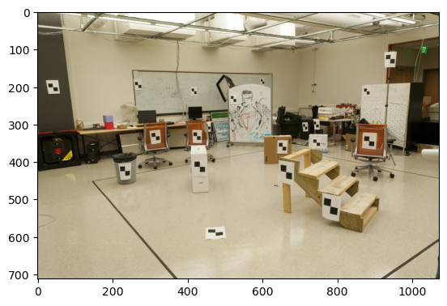
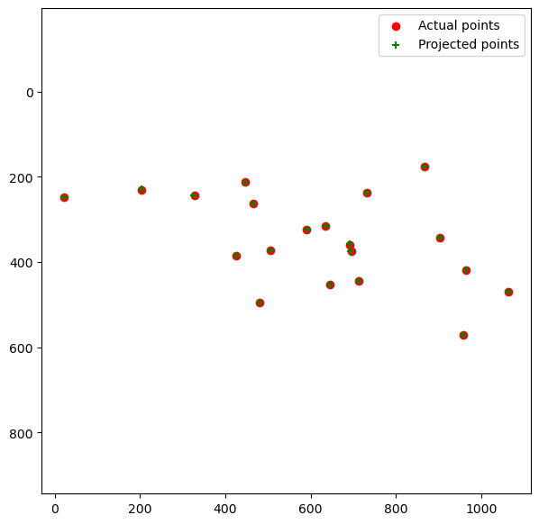
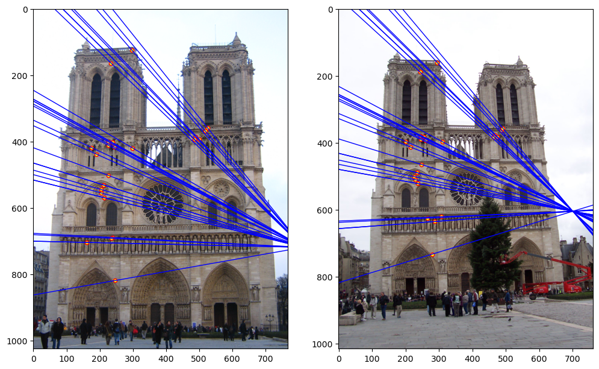
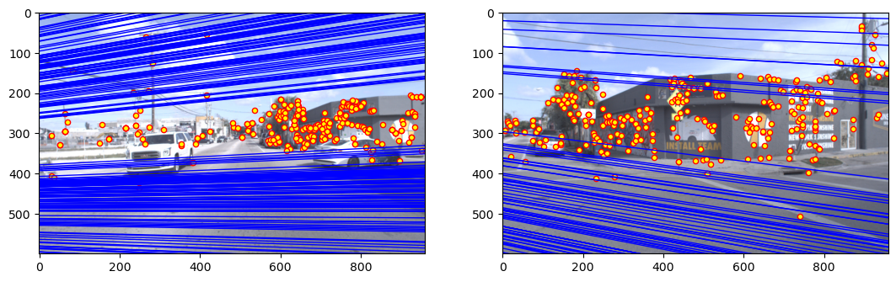
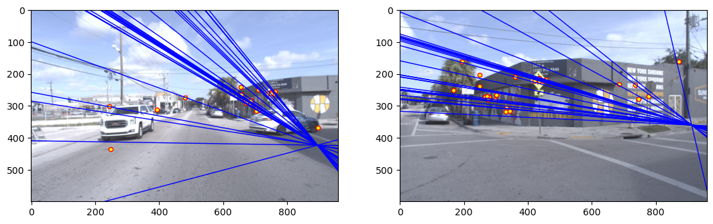
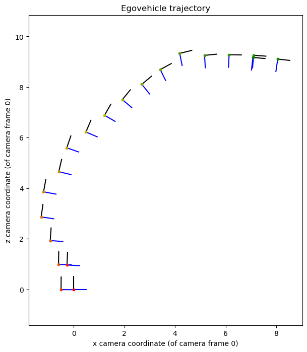

Camera geometry: from photos back to the 3D world
A photo flattens the world. We worked out how to unflatten it: calibrating a camera from known points, relating two photos of the same scene, using RANSAC to ignore bad matches, and finally tracking a self-driving car's movement using nothing but its camera.
The 30-second version
- Built: the geometry that links 3D scenes to 2D photos: a camera projection matrix fitted from known points, the fundamental matrix that ties two views together, and RANSAC to estimate it from messy, partly wrong matches.
- Applied it to: a lab scene with measured markers, landmark photos, and real self-driving-car footage from Argoverse, ending with visual odometry: tracking how the car moved using only its camera.
- Result: recovered the camera's position in the lab and on the car (about 1.4 m off the ground, as you would expect), clean epipolar geometry once RANSAC was in, and a smooth turning trajectory for the car.
From pictures back to the 3D world
A photo flattens the world: every 3D point lands on one 2D pixel. If you know how the camera flattens things, you can run that backwards: work out where the camera was, relate two photos of the same scene, and eventually track a robot or a car as it moves. This project builds those pieces one at a time.
Calibrating a camera
The camera's projection is captured by a single 3×4 matrix that maps a 3D point to a 2D pixel. Given pairs of known 3D points and where they appear in the image, each pair gives two linear equations, and with enough of them I solved for the matrix with least squares. From the matrix you can read off where the camera itself sits in the world.

The lab scene
Measured points (red) vs. my projection (green)We then did the same for a camera mounted on an Argoverse self-driving car, using points from its lidar. The recovered camera sits about 1.65 m ahead of the car's reference point and about 1.42 m above the ground, which is exactly where a roof-mounted camera should be. That sanity check was more convincing than any unit test.
Relating two views
With two photos of the same scene, every point in the first image must lie somewhere on a specific line in the second: its epipolar line. The fundamental matrix encodes that relationship. I estimated it with the eight-point algorithm, normalising the coordinates first (centring them and scaling them to a similar size), which makes the estimate far more stable.
Why normalise?
Pixel coordinates are in the hundreds while the equations also involve 1s. Without normalising, the least-squares problem is badly conditioned and small errors in the matches swing the result wildly. Centring and scaling the points fixes it in a few lines.
RANSAC: ignoring the bad matches
Real matches from SIFT are never all correct, and a handful of wrong ones is enough to ruin a least-squares fit. RANSAC handles that by repeatedly picking a tiny random sample of matches, fitting a model to just those, and counting how many of all the other matches agree. The model with the most agreement wins, and the outliers are simply ignored.
# iterations needed to hit a clean sample with high confidence
k = log(1 - p_success) / log(1 - inlier_ratio ** sample_size)


Without RANSAC
With RANSACVisual odometry: tracking a car with its camera
Put the pieces together and you can follow a moving camera. For each pair of consecutive frames from the car: match features, estimate the fundamental matrix with RANSAC, combine it with the camera's known intrinsics to get the essential matrix, and decompose that into the rotation and direction of travel between the two frames. Chain those small motions together and you get the car's path.

What it taught me
- Geometry is the backbone of perception. Every self-driving and robotics stack I have seen since leans on these same matrices.
- Robustness beats precision. A careful least-squares fit on bad data loses to a rough fit that knows which data to ignore.
- Sanity-check against the physical world. A camera 1.4 m off the ground told me the code worked better than any test case did.
Key terms
- projection matrix
- A 3×4 matrix that maps 3D world points to 2D pixels for one camera.
- fundamental matrix
- A 3×3 matrix relating two views: it maps a point in one image to a line in the other.
- epipolar line / epipole
- The line a point must lie on in the other view; all of them meet at the epipole, the other camera's image.
- RANSAC
- Random sample consensus: fit to small random samples and keep the model most of the data agrees with.
- visual odometry
- Estimating a camera's own motion from the sequence of images it captures.
- Argoverse
- A public self-driving-car dataset with camera images, lidar and calibration.